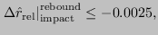
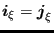
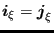

Keyword type: model definition
With this option the force-velocity relationship can be defined for dashpotelements. Dashpot elements only make sense for dynamic calculations(*DYNAMIC, *MODAL DYNAMIC and*STEADY STATE DYNAMICS). There is one required parameter ELSET. With this parameter the element set is referred to for which thedashpot behavior is defined. This element set should contain dashpot elementsof type DASHPOTA only.
The dashpot constant can depend on frequency and temperature. Frequency dependence only makes sense for*STEADY STATE DYNAMICS calculations.
First line:
Second line: enter a blank line
For each temperature a set of lines can be entered. First line in the first set:
Example: *DASHPOT,ELSET=Eall 1.e-5
defines a dashpot constant with value  for all elements in elementset Eall and all temperatures.
Example: *DASHPOT,ELSET=Eall 1.e-5,1000.,273. 1.e-6,2000.,273. 1.e-4,,373.
defines a dashpot constant with value at a frequency of  andwith value
andwith value  at a frequency of
at a frequency of  , both at a temperature of
, both at a temperature of . At a temperature of  the dashpot constant is frequency independentand takes the value
. At a temperature of  the dashpot constant is frequency independentand takes the value  . These constants apply to all dashpot elementsin set Eall.
. These constants apply to all dashpot elementsin set Eall.
Example files: dashpot1, dashpot2, dashpot3.